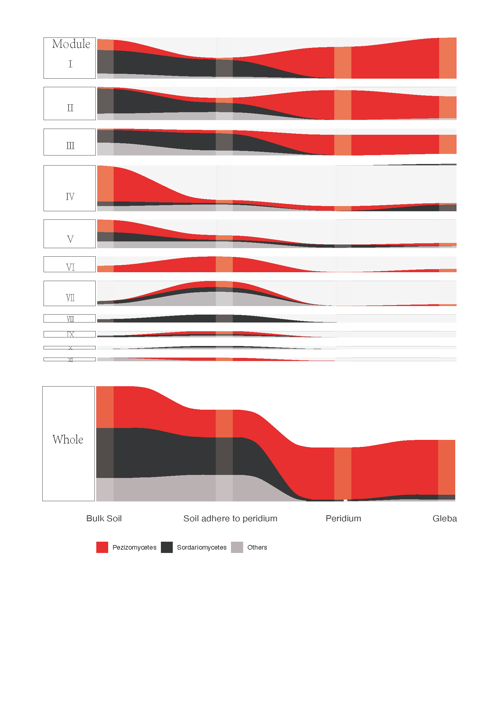

Let’s begin with a simple question:what is alluviam? Maybe you could find the answer in Creating Alluvial Diagrams and Alluvial Plots in ggplot2. Here you go, start your practice right now!
And then the further question appears: when should I use it in my paper? From my limited experience, it would be a perfect solution if you want to illustrator your data by a flow-dynamic picture. Simplly, you could see it as a ribbon-connected stacked bar plots which located in parallel along a axis of variable.
1.Read data
The point of ploting Alluviam lies in rebuilding your data structure, that is, you need to calculate the frequency of each variable by ID(sample) before you plot it.
library(readxl)
Module_fungi1<-read_excel("Module.liudong.xlsx", sheet = "Sheet5")
Module_fungi1## # A tibble: 132 x 5
## Trt Module Microbe Freq ID
## <chr> <dbl> <chr> <dbl> <dbl>
## 1 BS 0 Others 3 1
## 2 BS 0 Pezizomycetes 7 2
## 3 BS 0 Sordariomycetes 15 3
## 4 BS 1 Others 4 4
## 5 BS 1 Pezizomycetes 1 5
## 6 BS 1 Sordariomycetes 16 6
## 7 BS 2 Others 8 7
## 8 BS 2 Pezizomycetes 1 8
## 9 BS 2 Sordariomycetes 8 9
## 10 BS 3 Others 3 10
## # … with 122 more rows#In this example, column "ID" is the saample ID, you could regard each ID as one stream, these stream will go through stratum "Trt". Each Stream has its own identity, shich's clour is defined by variable Microbe, size defined by Freq.2.Data process
Module_fungi1$Module<-as.factor(Module_fungi1$Module)
#Transfer type of colunmn Module from numerical to factor.
Module_fungi1$Trt = factor(Module_fungi1$Trt, levels=c('BS','SP','P','G'))
Module_fungi1$Microbe = factor(Module_fungi1$Microbe,levels=c('Pezizomycetes','Sordariomycetes','Others'))
#Reorder the levels of Trt abd Microbe as you wish.
str(Module_fungi1)## tibble [132 × 5] (S3: tbl_df/tbl/data.frame)
## $ Trt : Factor w/ 4 levels "BS","SP","P",..: 1 1 1 1 1 1 1 1 1 1 ...
## $ Module : Factor w/ 11 levels "0","1","2","3",..: 1 1 1 2 2 2 3 3 3 4 ...
## $ Microbe: Factor w/ 3 levels "Pezizomycetes",..: 3 1 2 3 1 2 3 1 2 3 ...
## $ Freq : num [1:132] 3 7 15 4 1 16 8 1 8 3 ...
## $ ID : num [1:132] 1 2 3 4 5 6 7 8 9 10 ...2.plot alluvium
2.1 alluvium1
library(ggplot2)
library(ggalluvial)
ggplot(Module_fungi1,
aes(x = Trt, stratum = Module, alluvium = ID, #Module as stratum
y = Freq,
fill = Microbe, label = Microbe)) +
scale_x_discrete(expand = c(.05, .1)) +
scale_fill_brewer(type = "qual", palette = "Set3",limits=c('Pezizomycetes','Sordariomycetes','Others')) +
geom_flow() +
geom_stratum(alpha = .5) +
theme(legend.position = "bottom") +
ggsave( file = "Figure_Fungi_1.pdf", width = 8, height = 6, dpi = 600)
2.2 alluvium2
ggplot(Module_fungi1,
aes(x = Trt, stratum = Microbe, alluvium = ID, #Microbe as stratum
y = Freq,
fill = Microbe, label = Microbe)) +
scale_x_discrete(expand = c(.05, .1)) +
scale_fill_brewer(type = "qual", palette = "Set3",limits=c('Pezizomycetes','Sordariomycetes','Others')) +
geom_flow() +
geom_stratum(alpha = .5) +
theme(legend.position = "bottom") +
ggsave( file = "Figure_Fungi_3.pdf", width = 8, height = 6, dpi = 600)
2.3 alluvium3
Module_fungi1_1<-read_excel("Module.liudong.xlsx", sheet = "Sheet6")
Module_fungi1_1$Module<-as.factor(Module_fungi1_1$Module)
Module_fungi1_1$Trt = factor(Module_fungi1_1$Trt, levels=c('BS','SP','P','G'))
Module_fungi1_1$Microbe = factor(Module_fungi1_1$Microbe,levels=c("Blank",'Pezizomycetes','Sordariomycetes','Others'))
ggplot(Module_fungi1_1,
aes(x = Trt, stratum = Module, alluvium = ID,
y = Freq,
fill = Microbe, label = Microbe)) +
scale_x_discrete(expand = c(.05, .1)) +
scale_fill_brewer(type = "qual", palette = "Set3",limits=c('Pezizomycetes','Sordariomycetes','Others')) +
geom_flow() +
geom_stratum(alpha = .5) +
theme(legend.position = "bottom") +
ggsave( file = "Figure_Fungi_2.pdf", width = 8, height = 6, dpi = 600)
3.Final output processed by adobe illustrator
